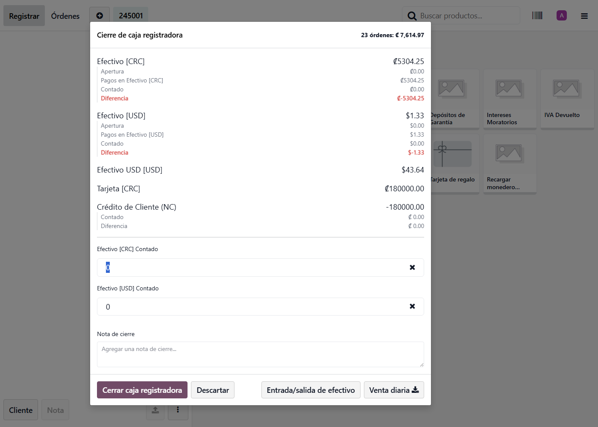
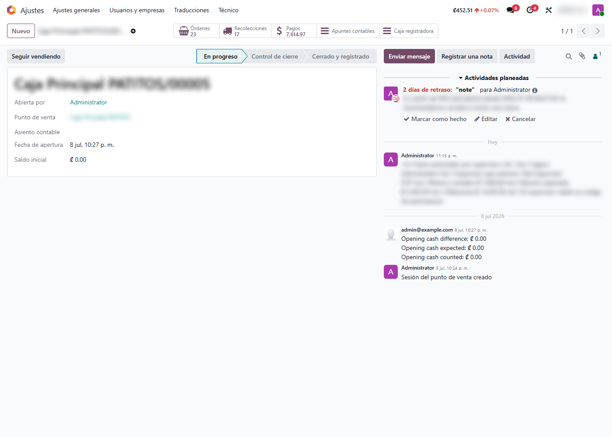

Control de Permisos de Cierre de Caja
Protege el cierre de caja del Punto de Venta: oculta el efectivo esperado y las diferencias a los cajeros sin autorización, bloquea el cierre cuando hay faltante y permite que un supervisor lo apruebe con su código, dejando todo registrado para auditoría.
Capturas del proyecto
01 / 07




¿Quién debería ver cuánto efectivo espera la caja?
En muchos comercios, la pantalla de cierre del Punto de Venta muestra a cualquier cajero el efectivo esperado y la diferencia con lo contado. Con esa información a la vista, es fácil ‘cuadrar’ el conteo al monto que el sistema espera y disimular un faltante.
Este módulo separa lo que ve cada rol: el cajero solo ingresa su conteo real, mientras que el efectivo esperado y las diferencias quedan reservados para los responsables. Si al cerrar hay un faltante, el sistema bloquea la operación y exige la autorización de un supervisor, que la aprueba con su código sin compartir su usuario. Cada cierre con diferencia queda registrado para auditoría.
Funcionalidades clave
-
Vista limitada por rol
El cajero sin permiso solo ve el campo de conteo; el efectivo esperado y las diferencias quedan ocultos.
-
Bloqueo ante faltante
Si el conteo es menor al esperado, el cierre se bloquea con un aviso genérico, sin revelar el monto.
-
Autorización por supervisor
Un supervisor aprueba el cierre con faltante ingresando su código, sin cerrar la sesión del cajero.
-
Registro para auditoría
Cada cierre con diferencia, sobrante o autorización queda anotado en el historial de la sesión.
-
Sobrantes sin fricción
Si el cajero cuenta de más, la caja cierra con normalidad y el sobrante queda registrado.
-
Umbral configurable
Las diferencias pequeñas dentro del umbral autorizado del Punto de Venta cierran automáticamente.
Tecnología detrás del producto
¿Tu caja del Punto de Venta cierra sin controles?
Adapto el control de permisos de cierre a la política de tu comercio e integro la autorización de supervisores.